Lezione introduttiva di orientamento
Benvenuti al corso base
di Human Design
Formatrice: Valentina Russo
valentinarussobg5.com
Lezione introduttiva di orientamento
Formatrice: Valentina Russo
Prima di cominciare

Fig. 1 — Un bodygraph completo.
Per ottenere il massimo dalla lezione di oggi, assicurati di avere il tuo Disegno sotto mano.
Se non ce l'hai, vai su valentinarussobg5.com/calcolo-human-design
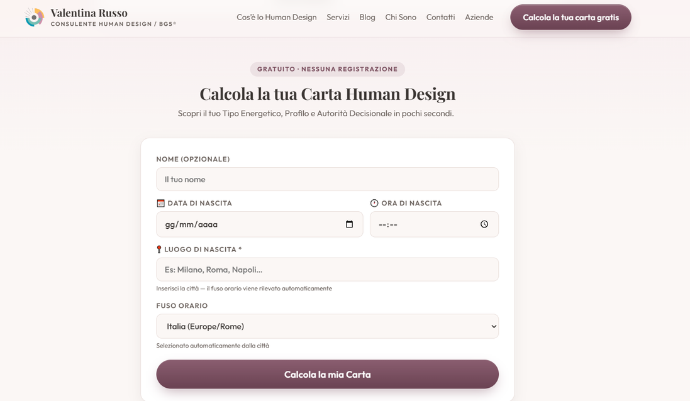
Chi vi accompagna
Proiettrice (Guida), Autorità Mentale, Profilo 2/4
Croce di Angolo Destro del Vascello dell'Amore 2
Questo corso arriva da diversi inviti che mi sono arrivati attraverso la divulgazione dello Human Design e del BG5 sul mio canale YouTube.
Mi sento chiamata ad essere al servizio delle persone, ma fuori dal sistema.
Il mio obiettivo, con questo corso, è fornire gli strumenti base per leggere in autonomia qualsiasi tipo di Disegno, partendo dal vostro.
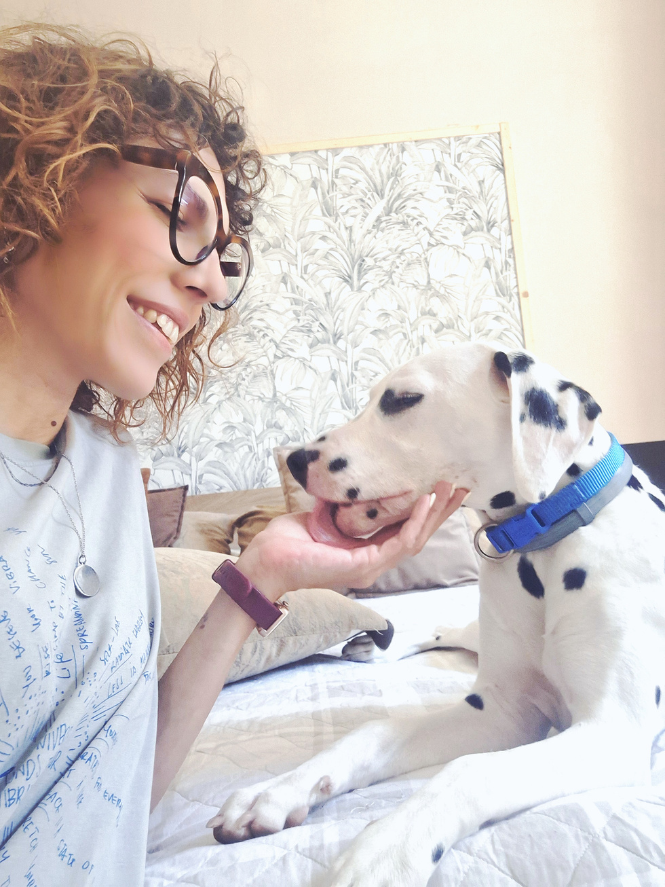
Approccio alla lezione
Ascolta come se fosse la prima volta che senti queste informazioni.
Sette passaggi
L'anello in basso a sinistra si chiude un passo alla volta.
I tempi stanno cambiando
L'attuale direzione verso la quale stiamo andando è, e sarà, uno shock. È un mondo che abbraccerà coloro che vivono e operano come loro stessi. Ciò significherà molto disordine, caos e confusione per coloro che sono persi nella dipendenza da schemi e relazioni. Tutto nella nostra specie è radicato nella dipendenza.
Ra Uru Hu
La dipendenza significa rinunciare a sé stessi, e alla propria Autorità.
I tempi stanno cambiando
Falso entusiasmo. La comunicazione si basa su pretese inevitabilmente non realizzate. Tendenza ad esprimere la fantasia come realtà.
Contemplazione nell'adesso che si traduce nella capacità di applicare la comprensione. Le istituzioni lavorano a beneficio della società, dei valori, degli ideali e dei loro modelli, e di come questi possono essere compresi e applicati. La capacità di trasformare la consapevolezza individuale in impegno e comprensione generali.
2027: il cambiamento.
Tempi in cui siamo
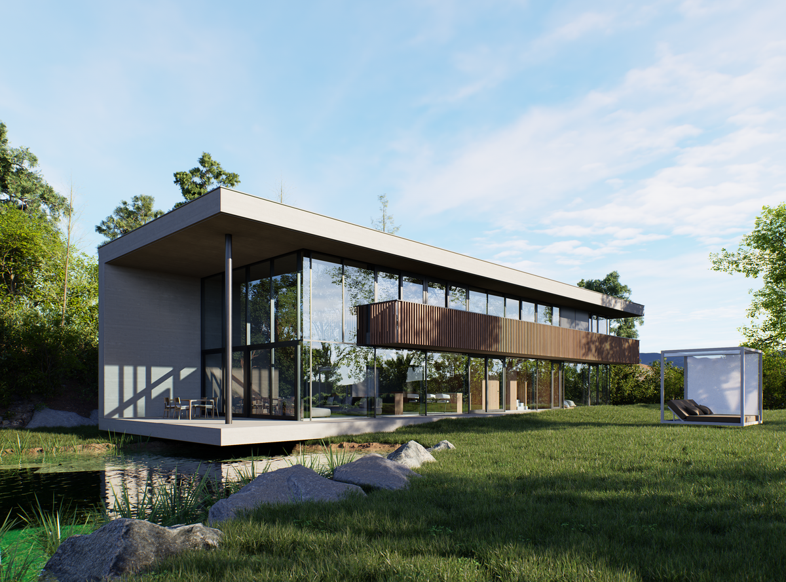
Soluzione
Soluzione
Per auto-realizzarci relazionalmente e materialmente abbiamo bisogno di connetterci con gli altri.
Quando sei allineato con ciò che è corretto per te, entri in relazione proprio con chi sei fatto per connetterti. In questo modo ci si può influenzare reciprocamente in modo costruttivo.
Conoscere sé stessi significa poter ottimizzare la propria energia, porre i confini sani che servono a ciascuno di noi e raggiungere il benessere e la prosperità che sostengano la soddisfazione, il successo, la pace o la sorpresa personale.
Per sfruttare al meglio questo corso
Non esiste una scorciatoia per diventare bravi in questa materia. Le AI possono fornire informazioni sommarie e spesso scorrette, quindi l'unica opzione è imparare "alla vecchia maniera": applicando ciò che si apprende nella vita quotidiana, facendo gli esercizi settimanali e discutendo in classe delle proprie osservazioni.
Non serve essere perfetti. Serve essere onesti con sé stessi.
Il binario e la sintesi del Disegno
Fig. 2 — La carta di Valentina Russo, 21 giugno 1988, Saluzzo.
Il binario e la sintesi del Disegno
Fig. 3 — Centri, canali e porte sulla stessa carta.
Il binario e la sintesi del Disegno
Il binario e la sintesi del Disegno
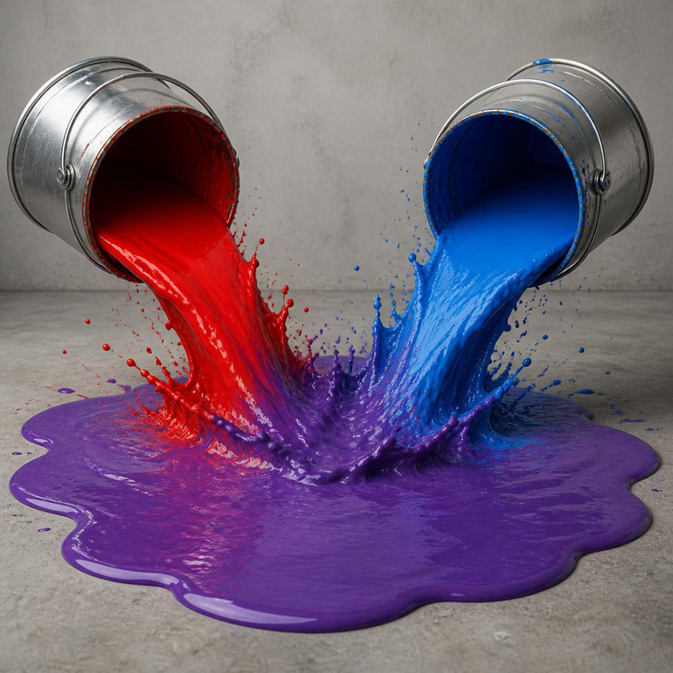
Primo strato
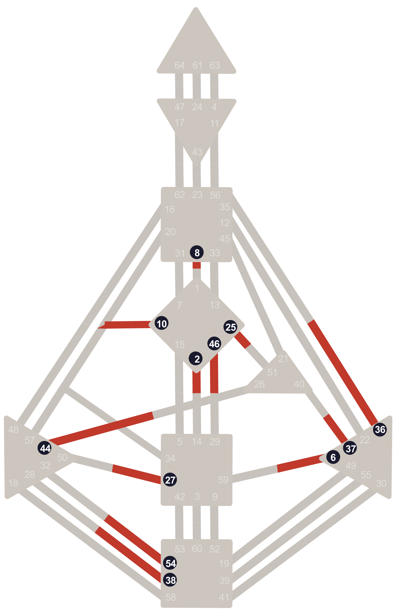
13 porte · Mappa genetica inconscia
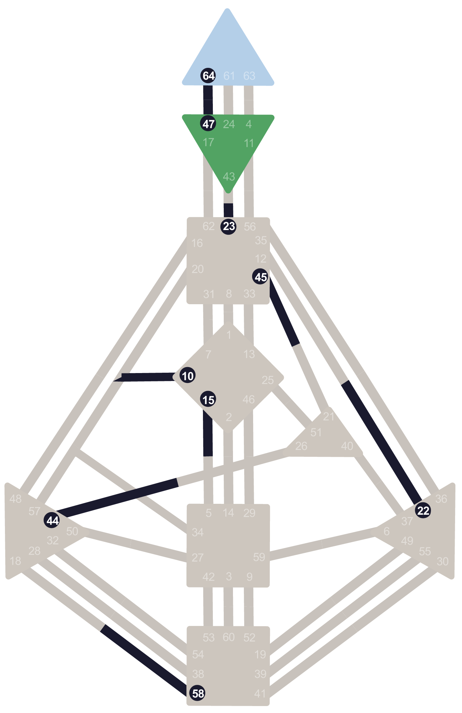
13 porte · Mappa della personalità conscia
26 porte · Canali e centri definiti
Secondo strato
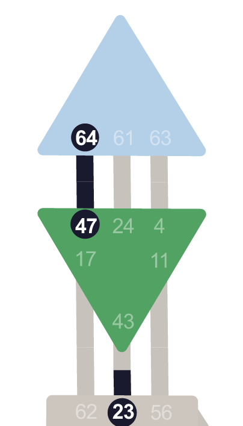
Fig. 4 — Il canale 64-47, Testa e Ajna.
Quando due porte definite si incontrano, creano un canale. Quel canale determina un punto di forza, definito da un circuito di energia coerente, che a sua volta definisce due centri.
Le porte 64 e 47 chiudono il circuito: Testa e Ajna si coloranoSecondo strato
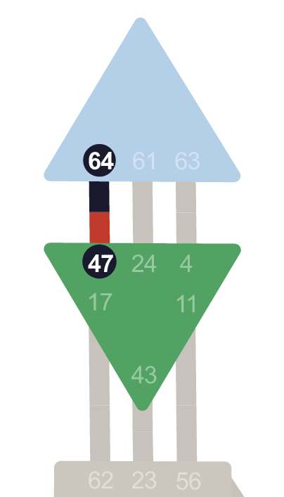
Metà conscio
e metà inconscio
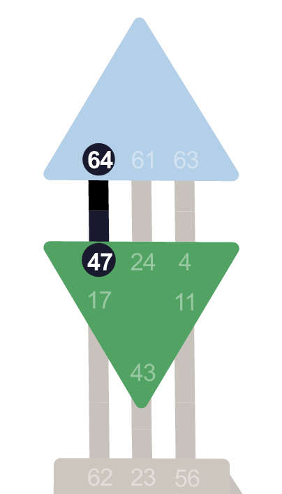
Conscio e metà inconscio
(o viceversa)
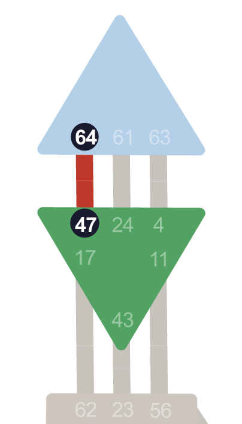
Totalmente
inconscio
Totalmente
conscio
Fig. 5 — Lo stesso canale 64-47 nelle quattro combinazioni possibili.
Terzo strato
Terzo strato
Il BG5 (Business Group 5) approfondisce proprio come siamo fatti per collegarci agli altri.
Il Rosso e il Nero
Stampa quattro copie della risorsa del corso, la trovi nella tua area riservata, e colora i quattro grafici in questa maniera:
Carica le foto o le scansioni dei quattro grafici nel forum e commenta con le sensazioni che hai provato svolgendo l'esercizio.
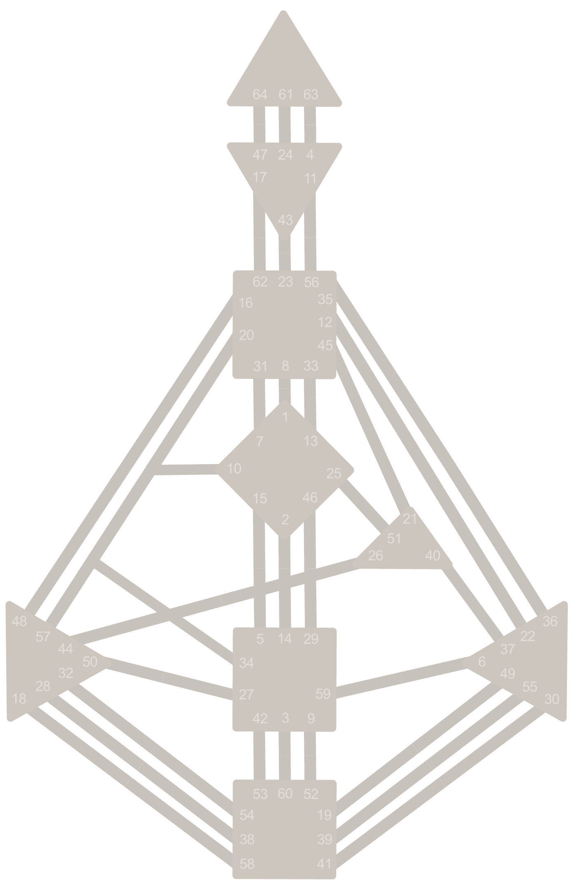
Fig. 6 — La risorsa da stampare.
Esercizio pratico · Il Rosso e il Nero
Il risultato atteso: rosso e nero sullo stesso foglio.
Esercizio pratico · Il Rosso e il Nero
Questa è la mappa genetica del tuo inconscio.
Il risultato atteso: solo il rosso.
Esercizio pratico · Il Rosso e il Nero
Questa è la mappa della tua personalità conscia.
Il risultato atteso: solo il nero.
Esercizio pratico · Il Rosso e il Nero
Questo è ciò che non è la tua natura, ed è dove vieni condizionato dagli altri.
Il punto di partenza: tutto ciò che è bianco.
Bonus per chi ha partecipato a questa lezione
Da utilizzare per sé stessi, o da regalare a qualcuno.
Istruzioni per l'iscrizione
Istruzioni per l'iscrizione
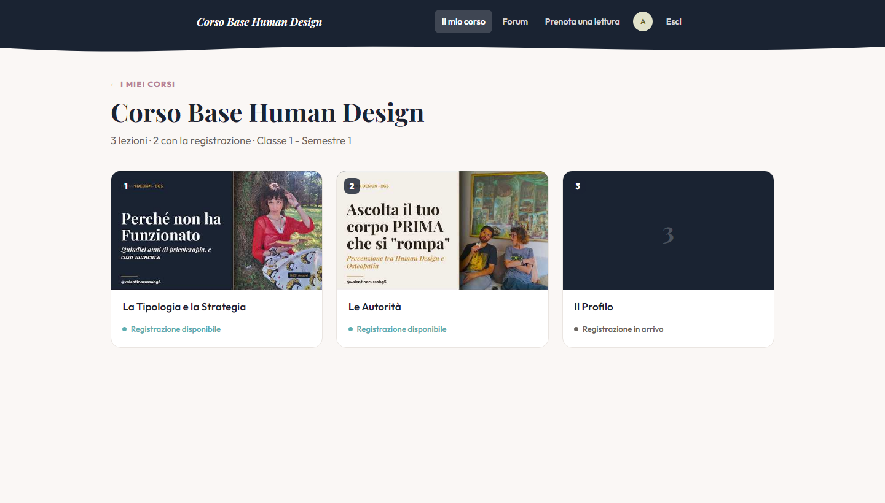
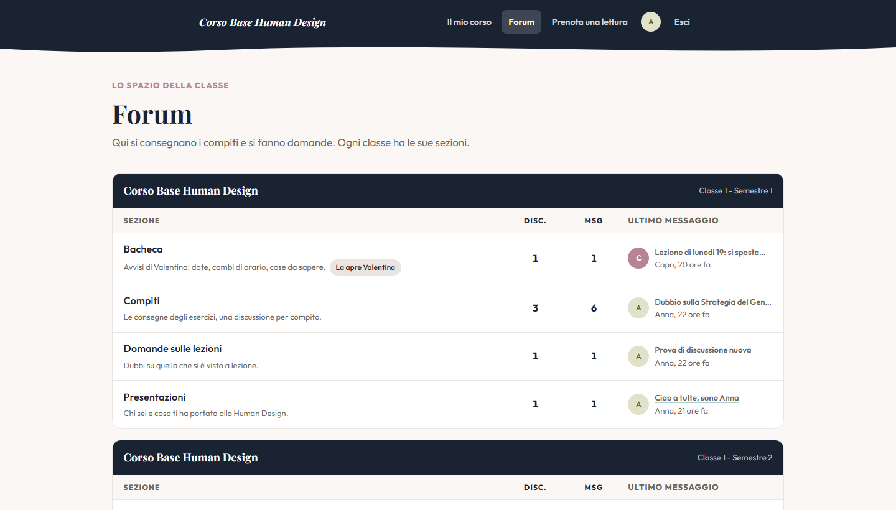
Insieme all'accesso ricevi per mail un breve video con le istruzioni del portale.
Ultimo passaggio
A mete eccelse per anguste vie
Valentina Russo